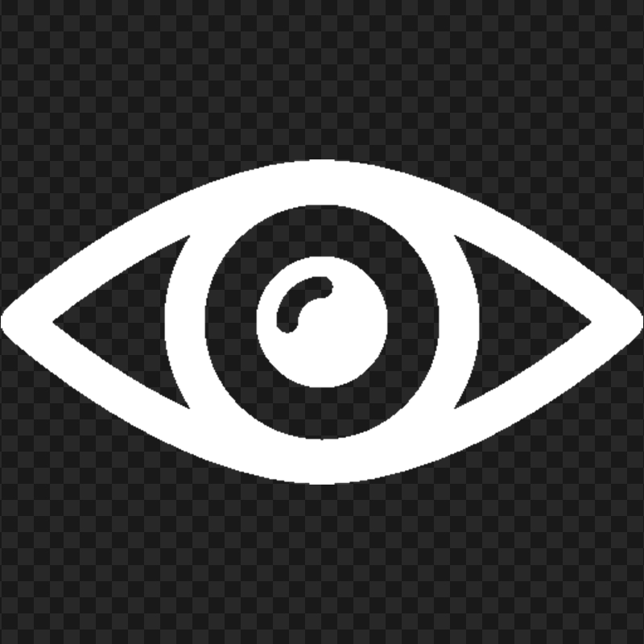
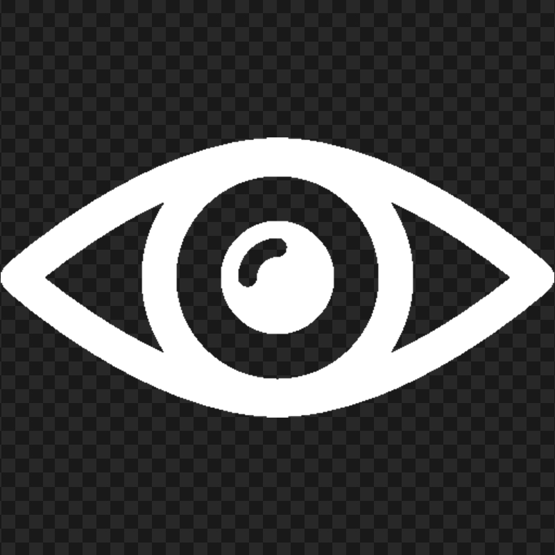
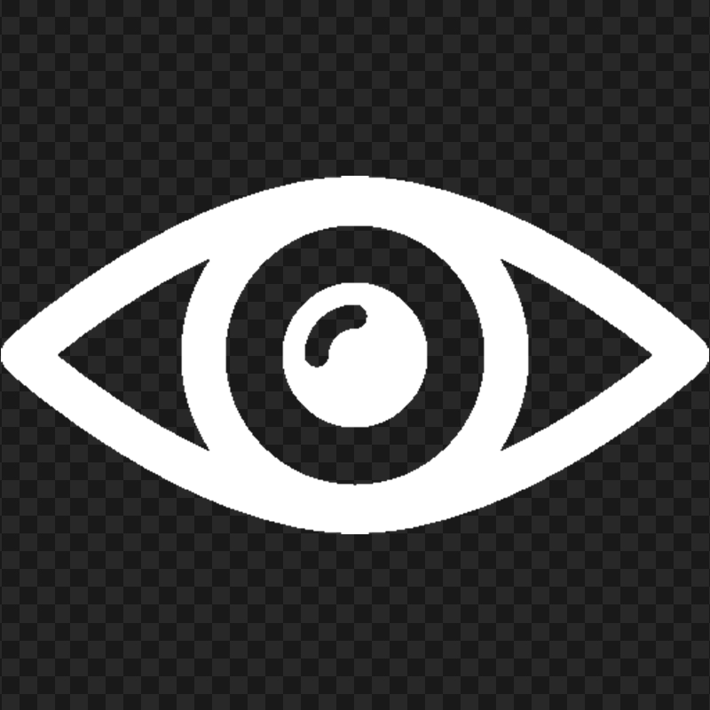

Tips:
This application save your items into local storage, therefore it is important to not move the folder, once you start using this tool
Create bookmark in your browser for easy access
Show Info
New Item


 
